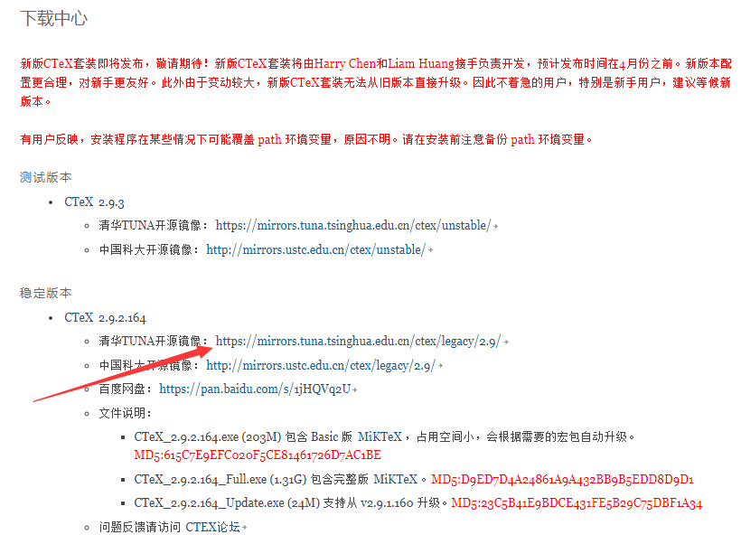

CTeX安装和卸载
概述
CTeX的官网安装包里面的MikTeX的版本是非常低的，低到了什么程度呢？如果我们在编译模板的时候发现缺少某个包，要想通过mpm安装会发现根本就连接不上服务器，所以安装包几乎是不可能的。虽然CTex/MikTex安装宏包可以实现安装包，但是会发现安装了包后有些模板会出现undefined control sequence的错误，这明显就不是根本的解决办法。所以最好的方法还是本文提出的安装CTeX的时候不安装CTeX默认版本的MikTeX，而是安装MikTeX的最新版本。总结一下，安装CTeX的注意事项有以下：
- 不能安装CTeX自带的MikTeX，改用最新版本的MikTeX，方便后期宏包的安装和更新；
- 在安装CTeX之前一定要备份path环境变量，不然可能会被覆盖掉导致以前的环境变量丢失。
下载
下载CTeX
在官网下载安装包,记得下载稳定版本的，测试版的可能会存在各种各样的BUG。我选择的清华的软件源

点击链接后选择full版本的，虽然大但是安装的是完整版的，后面不容易缺失宏包。
下载MikTeX
到这里下载最新版本的MikTeX。
安装
安装CTeX
在安装之前先备份path环境变量,双击安装包启动安装程序，设定好安装路径，在选择安装的组件对话框里面一定要记得不要选择安装MiKTeX
切记： 在安装之前一定要备份path环境变量，不然以前的环境变量可能会消失。如果已经安装但是没有备份path变量，系统也没有重启过，那么还有救：
按 win +R，输入 regedit以打开注册表。
找到如下项HKEY_LOCAL_MACHINE\SYSTEM\ControlSet002\Control\Session Manager\Environment，如果没有，可以找HKEY_LOCAL_MACHINE\SYSTEM\ControlSet001\Control\Session Manager\Environment，把里面的path复制过来，然后添加在系统变量的path之前。别忘了在中间添加一个英文的分号。
如果重启过了，可能就爱莫能助了。
安装最新版的WinEdt[可选]
到这里下载最新版本的WinEdt，然后点击进行安装，注意这里我们的安装路径就是CTeX安装目录下面的WinEdt，也就是覆盖安装，千万不要先卸载再安装，网上说会出问题，覆盖安装没有问题的。
破解WinEdt
一共有两种办法，参见参考链接2，我使用的第二种办法，参见这里，记得要修改对应的软件版本号，不然会失败，比如对于WinEdt 10.x，需要写入RegDeleteValue('HKEY_CURRENT_USER', 'Software\WinEdt 10', 'Inst');，如果是WinEdt 8就写入RegDeleteValue('HKEY_CURRENT_USER', 'Software\WinEdt 8', 'Inst');
安装MikTeX
在CTeX的安装目录下面创建MikTeX空目录，将下载的最新版本的MikTeX安装在该目录即可。到这里我们就可以打开CTeX的WinEdit编辑器进行编译了。首次编译网上的论文模板可能会出现各种缺失宏包的问题，这个时候MikTeX的包管理器会自动弹出安装提示，直接确认安装即可！如果安装下载速度过慢或者连不上服务器可以打开MikTeX Console更换下载源。
CTeX的卸载问题
CTex的卸载顺序最好按照先卸载MikTeX然后再卸载CTeX，因为如果有时候先卸载了CTeX会发现卸载不了MikTeX，如果出现了这种情况可以考虑将MikTeX的安装路径清空，然后再在该路径安装MikTeX,这时候再卸载就没有问题了。